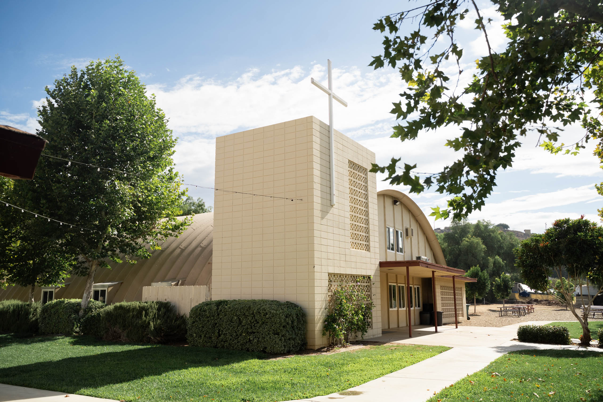
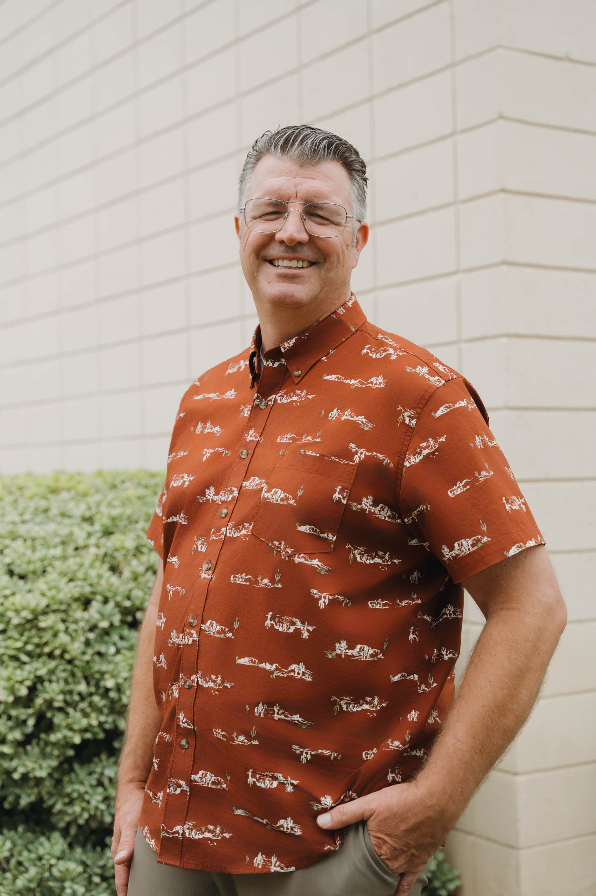

A collection of caring, Christ-following people.
Mapleview Baptist Church is a Bible-based church in Lakeside, California — San Diego's East County. Whoever you are and wherever you're starting from, there's a seat for you here.
Three simple commitments
The Bible, first and last
We hold to the historic truths of the Christian faith: the authority of Scripture, salvation by grace through faith in Jesus Christ, and the calling of every believer to know Him and make Him known.
Read our full statement of faith
It started with a fire extinguisher.
In early 1959, church planter Harold Nickel walked into Narramore Hardware in Lakeside to sell Mr. Narramore some fire extinguishers. The conversation turned to the things of the Lord — and to Mr. Narramore's interest in starting a new church in Lakeside. Soon four families were worshiping together in the Narramore home, with Mr. Nickel as pastor and his wife Rosalie faithfully encouraging the families alongside him.
The congregation outgrew a small room above the Lakeside Theater, then a storage room behind the hardware store. In faith, four acres were purchased on Mapleview Street — giving the church its name. With very little cash, much trust in the Lord, and many hours of volunteer labor, a permanent building took shape, and the first service was held on Easter Sunday, April 1961.
The people who serve you



13176 Mapleview St, Lakeside, CA 92040
office@mapleviewchurch.com